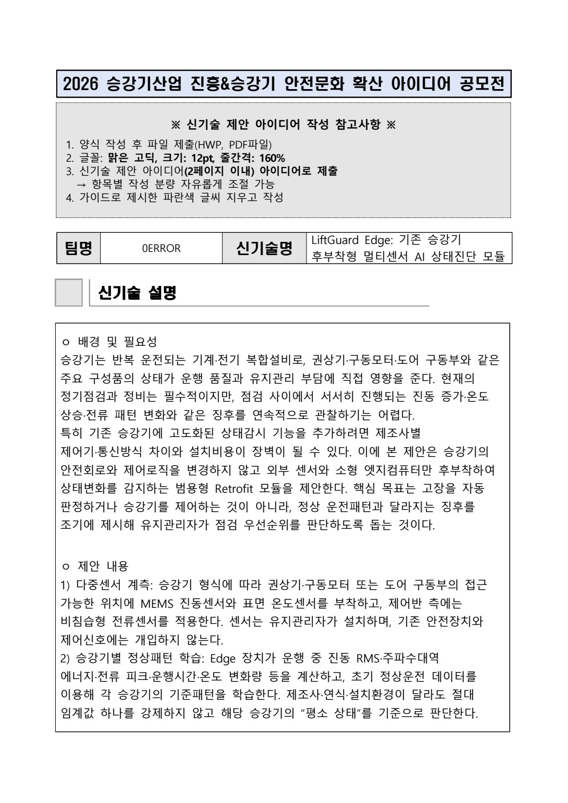
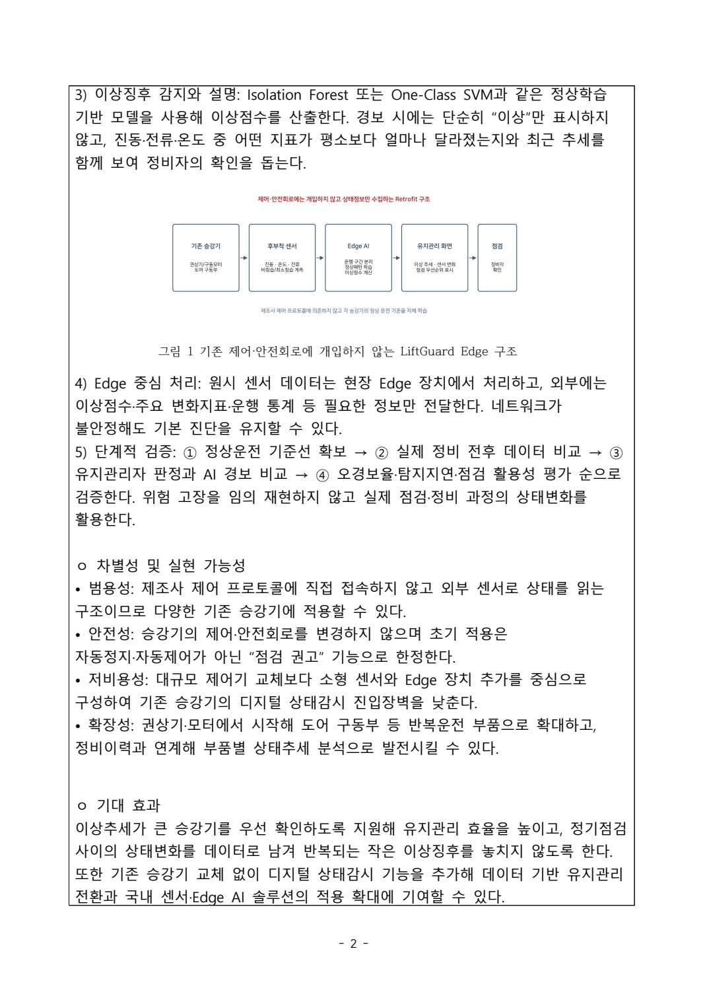

기존 승강기의 상태를 살피는 구상
신기술 제안의 대상
2026 승강기산업 진흥 & 안전문화 확산 아이디어 공모전을 위해 0ERROR 팀이 준비한 LiftGuard Edge입니다. 기존 승강기에 센서와 엣지 장치를 후부착해 정상 패턴에서 벗어나는 변화를 점검에 활용하는 개념입니다.
점검 판단 지원의 범위
핵심 방향은 기존 안전회로와 제어기에 개입하지 않고 유지관리자가 우선순위를 검토하도록 돕는 것입니다. 고장 자동 판정이나 안전장치를 대신하는 시스템을 완성한 것으로 설명하지 않습니다. 센서 구성과 검증 방향을 담은 신기술 제안 단계입니다.
구상한 신호
진동·온도·비침습 전류센서로 상태 변화를 읽고, 엣지에서 데이터를 처리해 점검용 정보를 전달하는 방향입니다. 센서 위치와 설비별 정상 조건의 차이를 고려해야 하므로 보편적인 고장 기준 하나로 해결한 결과는 아닙니다.
제 역할
팀 대표로 기재되어 있고 신청서와 개념 제안서를 이메일 제출했습니다. 기획 문서에는 세부 개인 개발 분담이 명확하지 않아 하드웨어·AI 전체의 독자 개발 성과로 쓰지 않습니다. 팀의 아이디어를 제출 가능한 문서로 정리한 활동으로 소개합니다.
어떤 부품을 어떤 신호로 살피는가
기술 제안서는 권상기·구동모터·도어 구동부를 반복운전 부품으로 정하고, 접근 가능한 위치의 MEMS 진동센서와 표면 온도센서, 제어반 측의 비침습형 전류센서를 계측 후보로 제시합니다. 제조사 제어 통신에 접속하는 대신 외부에서 관찰할 수 있는 물리 신호를 이용하려는 구상입니다.
판단의 기준도 모든 승강기에 같은 절대값을 적용하기보다 각 승강기의 초기 정상운전 자료로 두었습니다. 제조사·연식·설치환경이 달라 평소 진동이나 온도가 다를 수 있기 때문입니다. 이때 목표는 고장 부품을 자동 확정하는 것이 아니라 ‘평소와 달라진 설비’를 보여 주어 유지관리자가 우선순위를 정하게 돕는 것입니다. 설비 상태감시 문제를 안전회로와 분리해 기술 범위를 정했습니다.
근거: 승강기/신기술 제안 아이디어.pdf (1–2)
2쪽 기술 제안서의 구조

실제 결과물
팀 참가신청서와 2쪽 “신기술 제안 아이디어” 문서가 결과물입니다. 원본 문서 이미지는 센서 후부착, 정상 패턴 비교와 엣지 처리, 점검 안내의 흐름을 보여 줍니다. 실제 승강기에 장착된 모듈이나 현장 실증 사진이 아닙니다.
제안의 흐름
센서로 신호 수집 → 기본 통계·특징 정리 → 정상 패턴과 변화 비교 → 관리자가 이해할 수 있는 점검 권고로 연결하는 개념입니다. 초기 모델 후보와 단계적 검증을 문서에 설명했습니다. 모델 이름의 기재는 성능 검증 완료를 의미하지 않습니다.
후부착의 조건
기존 설비에 추가한다는 접근은 설치와 유지관리 조건을 더 중요하게 만듭니다. 센서가 기존 장치와 간섭하지 않는지, 점검자가 정보를 신뢰하고 조치할 수 있는지 확인해야 합니다. 제안서는 기존 안전회로의 비개입과 점검 지원이라는 경계를 두고 있습니다.
문서의 기대효과
조기 점검과 유지관리 지원은 아이디어의 목적입니다. 실제 고장률 감소, 탐지율·오경보율 달성이나 현장 설치 수를 확인한 실적으로 사용하지 않습니다. 문서의 구성과 현재 단계를 함께 읽을 수 있도록 결과물을 배치했습니다.

센서에서 점검 권고까지의 설명 구조
문서에 제시한 특징은 진동 RMS, 주파수대역 에너지, 전류 피크, 운행시간, 온도 변화량입니다. 엣지 장치가 특징을 계산하고 Isolation Forest 또는 One-Class SVM처럼 정상 상태에서 벗어나는 정도를 보는 방법을 후보로 검토하도록 했습니다. 알고리즘 명칭만 나열하지 않고 경보 화면에 어떤 지표가 평소보다 얼마나 달라졌는지와 최근 추세를 함께 보여 주는 구조를 적었습니다.
원시 신호는 현장 장치에서 처리하고 외부에는 이상점수·주요 변화지표·운행통계 등 필요한 정보를 보내는 방향입니다. 네트워크가 끊겨도 현장 처리를 유지하도록 기획했습니다. 이 구조도와 2쪽 설명서가 실제 결과물이며, 완성된 대시보드나 설치된 센서 사진이 존재한다는 의미는 아닙니다.
절대 임계값과 ‘평소 상태’의 차이
제안서가 승강기별 정상 패턴을 두는 이유는 진동·전류·온도 수준이 제조사·설치 위치·운행 조건에 따라 달라질 수 있기 때문입니다. 같은 수치가 모든 장비에서 같은 의미를 갖는다고 가정하지 않고 해당 승강기의 이전 상태에서 얼마나 벗어났는지를 살피는 구상입니다. 특징량 중 RMS는 진동 크기, 주파수대역 에너지는 진동이 나타나는 대역, 운행시간과 전류 피크는 반복 운전의 변화를 설명할 후보로 적었습니다. 실제로 원인별 분리 성능을 확인한 결과는 아직 없습니다.
경보를 보는 유지관리자에게는 점수 하나보다 확인할 단서가 필요하므로 신호별 변화와 추세를 함께 보여 주도록 했습니다. 예를 들어 진동과 온도가 달라졌다는 관측을 곧바로 특정 부품 고장 판정으로 연결하지 않습니다. 이 설계는 정비자의 판단을 돕는 정보 계층을 정한 것입니다. 현장 엣지에서 요약하고 필요한 통계만 외부에 보내는 구성도 설치된 통신환경이나 서버 구현의 성과가 아니라 범용 후부착 모듈의 기술 요구를 정리한 문서 내용입니다.
근거: 승강기/신기술 제안 아이디어.pdf (1–2)
이메일 제출과 개발 검증의 구분
확인된 진행 단계
2026년 10월 12일 팀 대표로 신청서와 제안서를 이메일 제출했습니다. 접수·평가·수상과 현장 개발 완료는 별개이므로, 현재 포트폴리오에는 제출까지 확인된 팀 기술 제안으로 적습니다.
이후 실증의 조건
실제로 개발한다면 설치 위치와 센서 고정, 기종·운행 패턴별 기준선, 데이터의 결측과 통신 장애를 점검해야 합니다. 정상 운전의 변화와 이상 신호가 얼마나 구분되는지 확인하는 평가도 필요합니다. 이는 현재 개념에서 도출한 후속 검증 항목입니다.
사용자가 이해할 수 있는 알림
“이상” 점수만 전달하면 관리자가 무엇을 확인할지 알기 어렵습니다. 센서 변화와 점검 항목을 연결하고, 오경보가 운영에 주는 부담을 함께 평가하는 방향입니다. 실제 유지관리자 면담이나 현장 사용성 평가를 이미 수행한 것으로 적지 않습니다.
남긴 기획 경험
같은 상태감시 개념도 승강기에서는 기존 안전체계와 유지관리자의 판단이 중요한 조건이 됩니다. 기술을 다른 산업의 운영 맥락에 맞춰 설명하고 개발 완료와 구분해 제안한 사례입니다.
정비 전후를 이용하는 검증 순서
제안한 검증은 정상운전 기준선 확보 → 실제 정비 전후 비교 → 유지관리자 판정과 경보 비교 → 오경보율·탐지지연·점검 활용성 평가의 순서입니다. 위험 고장을 일부러 재현하기보다 실제 정비 과정에서 생기는 상태 변화를 활용하도록 했습니다. 정비 후 부품 상태가 달라져도 기존 정상 기준을 그대로 써도 되는지, 운행조건 변화가 경보를 만드는지 확인할 수 있는 구조입니다.
초기 기능은 점검 권고에 한정하며 기존 제어·안전회로를 변경하거나 자동 정지시키는 기능은 포함하지 않습니다. 권상기·모터에서 시작해 도어 구동부와 정비이력 연계로 넓히는 확장 방향을 적었습니다. 현재 문서가 보여 주는 것은 설치·특징·설명·평가를 연결한 구체적인 기술 제안입니다. 실제 현장 설치, 탐지 성능, 제조사 호환성이나 비용 절감은 후속 검증 영역입니다.
근거: 승강기/신기술 제안 아이디어.pdf (1–2)
기록의 근거
근거: 승강기 공모전 팀 참가신청서와 「신기술 제안 아이디어」 PDF. 2026.10.12 본인 발신 제출 메일. 권용민은 팀 대표로 기재돼 있습니다.
2026-10-20 기준. 개인 담당과 팀 기여, 해석·계획과 실측·완료 결과를 구분했습니다.